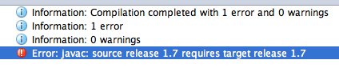

IDEA: javac: source release 1.7 requires target release 1.7
When running a JUnit test, using IntelliJ IDEA, I get

How can I correct this?
- Using SDK 1.7
- Module language level is 1.7
Maven build works fine. (That's why I believe this in IDEA configuration issue)
Answer
Most likely you have incorrect compiler options imported from Maven here:

Also check project and module bytecode ( target ) version settings outlined on the screenshot.
Other places where the source language level is configured:
- Project Structure | Project
- Project Structure | Modules (check every module) | Sources
Maven default language level is 1.5 (5.0), you will see this version as the Module language level on the screenshot above.
This can be changed using maven-compiler-plugin configuration inside
pom.xml:
<project> [...] <build> [...] <plugins> <plugin> <groupId>org.apache.maven.plugins</groupId> <artifactId>maven-compiler-plugin</artifactId> <configuration> <source>1.8</source> <target>1.8</target> </configuration> </plugin> </plugins> [...] </build> [...] </project>
or
<project> [...] <properties> <maven.compiler.source>1.8</maven.compiler.source> <maven.compiler.target>1.8</maven.compiler.target> </properties> [...] </project>
IntelliJ IDEA will respect this setting after you Reimport the Maven project in the Maven Projects tool window:
Suggest
IntelliJ 15, 2016 & 2017
Similar to that discussed below for IntelliJ 13 & 14, but with an extra level in the Settings/Preferences panel: Settings > Build, Execution, Deployment
Compiler > Java Compiler.
IntelliJ 13 & 14
In IntelliJ 13 and 14, check the Settings > Compiler > Java Compiler UI to ensure you're not targeting a different bytecode version in your module.